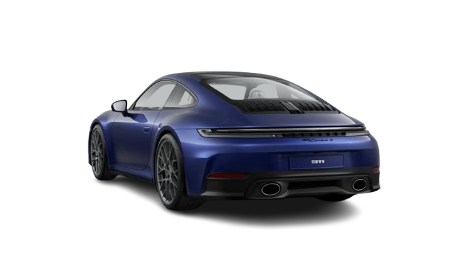
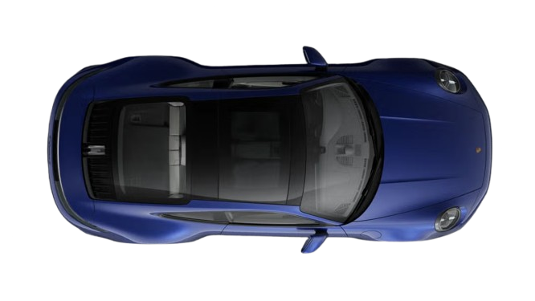
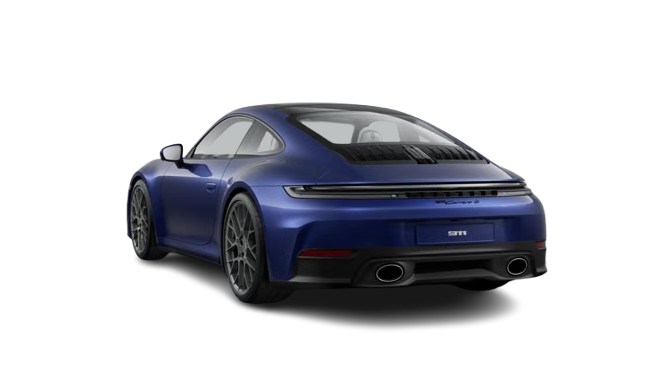
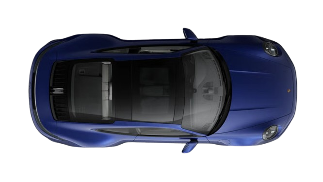

O ícone reinventado
O Porsche 911 Carrera S é uma obra-prima da engenharia alemã. Com mais de 50 anos de evolução, o 911 mantém sua identidade clássica enquanto incorpora o que há de mais moderno em tecnologia e desempenho. É a perfeita fusão entre tradição e inovação.
Elegancia agressiva
O design do 911 é imediatamente reconhecível. Linhas suaves, para-lamas largos e faróis icônicos formam um visual que impressiona por onde passa. Com opções de pintura metálica e rodas esportivas de até 20 polegadas, cada detalhe é pensado para destacar o espírito Porsche.
 


